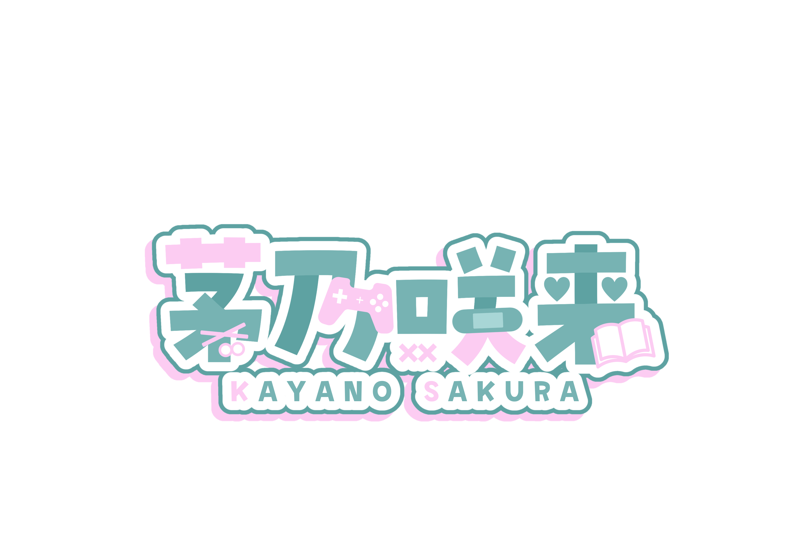

GAME
気になったゲームを、上手さより楽しさ重視で遊びます。

01
ゲームと本が大好きな女の子
ゲームは上達よりも楽しむことをモットーに、気になったものを気の向くまま遊ぶよ
本はジャンルにこだわらず、好きになった作品が好き
02
ゲームが好き。本が好き
でも、上手じゃなくたっていいし、詳しくなくたっていい。
茅乃咲来は、「好き」と思った気持ちをいちばん大切にする女の子。
ゲームは上達することより、思いっきり楽しむこと。
本はジャンルにこだわらず、心惹かれたものを気の向くままに。
気になるゲームに飛び込んだり、素敵な物語に夢中になったり。
ときには寄り道しながら、たくさんの「好き」を見つけていきます。
あなたの「好き」も、ここで一緒に楽しめますように。
03
気になったゲームを、上手さより楽しさ重視で遊びます。
好きになった本や、最近読んだ作品についてゆるくお話しします。
雑談や近況、好きなものについてのんびりおしゃべりします。
04
ここにファンアート、切り抜き、AI利用、配信上のお願いなどを記載ていく予定です。
05